| カーフ(既存 質感.jpg) 質感.jpg full-frame | 候補1: ブルー質感アップ 1000090057.jpg(8557ba58…) 全面(縁10px除外) 502×357 | 候補2: ベージュ質感アップ 1000090060.jpg(f0a65c5b…) 全面(縁10px除外) 824×383 | 候補3: グリーン製品写真ROI 1000090066.jpg(0358b73c…) ROI x230,y545,w620,h130 | |
|---|---|---|---|---|
| 素材の輝度(luma)そのまま 色を捨てた状態(表示は幅に合わせ縮小) | 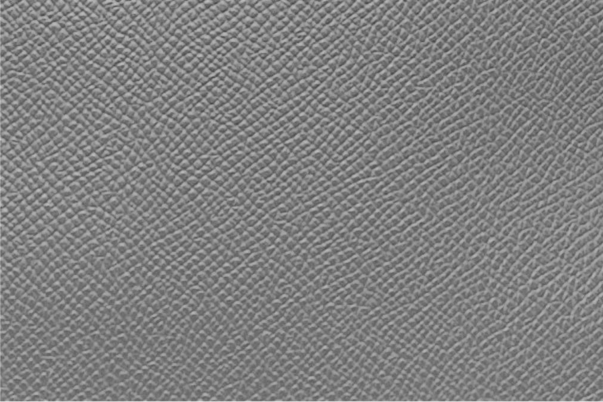 | 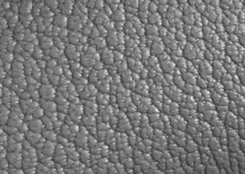 | 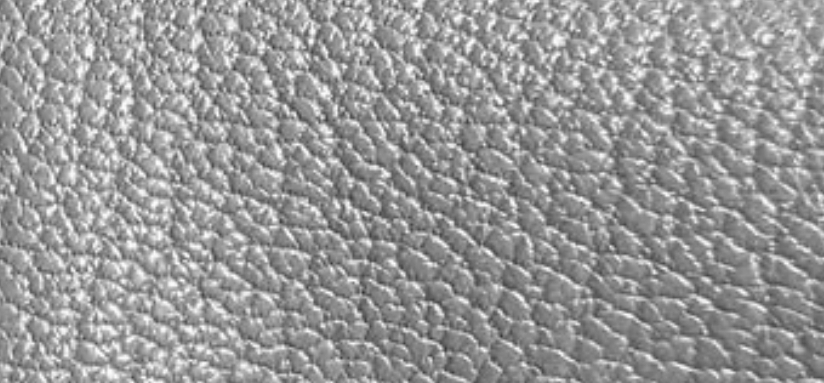 | 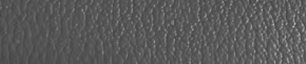 |
| グレージュ #82756b に適用 同一色・同一パラメータの 400×400 タイル | 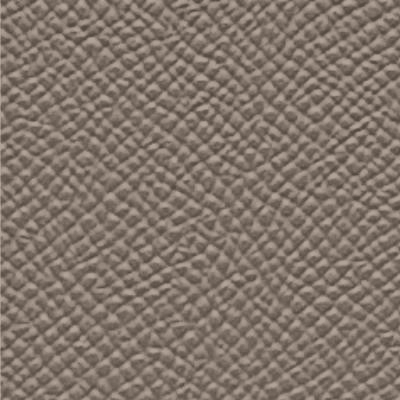 | 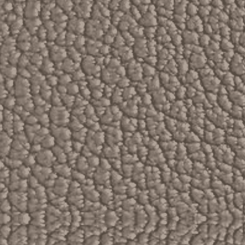 | 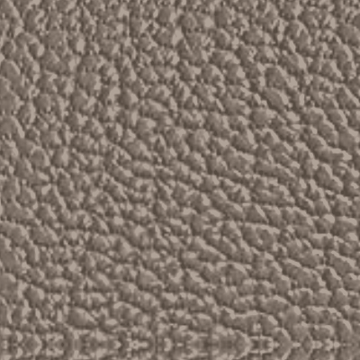 | 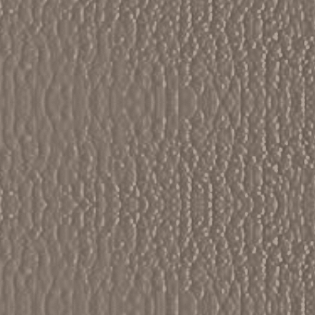 |
| ラベンダー #8089e3 に適用 新色ラベンダーのイメージ | 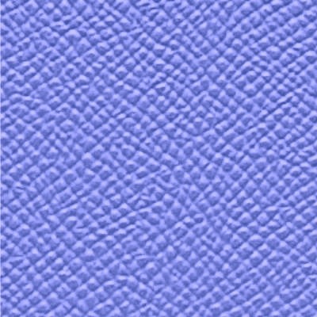 | 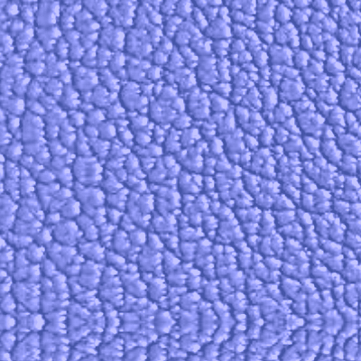 | 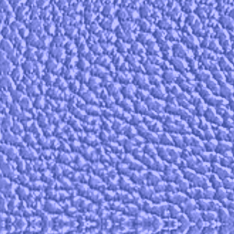 | 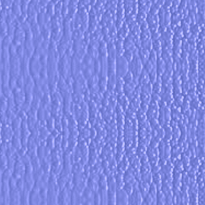 |